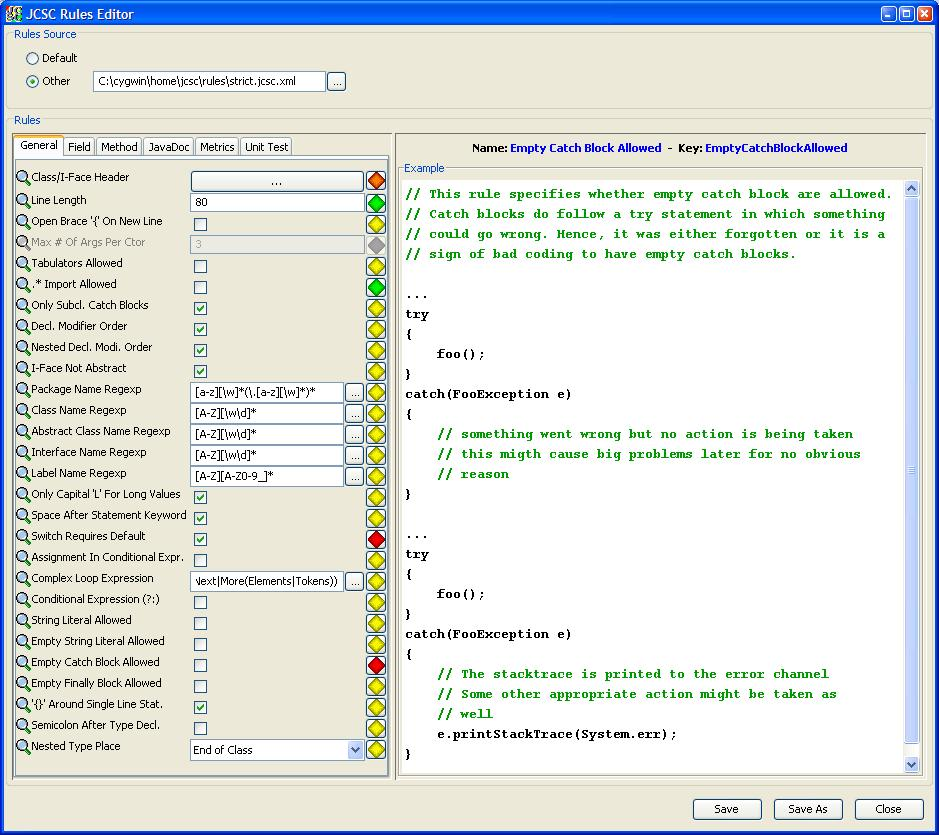
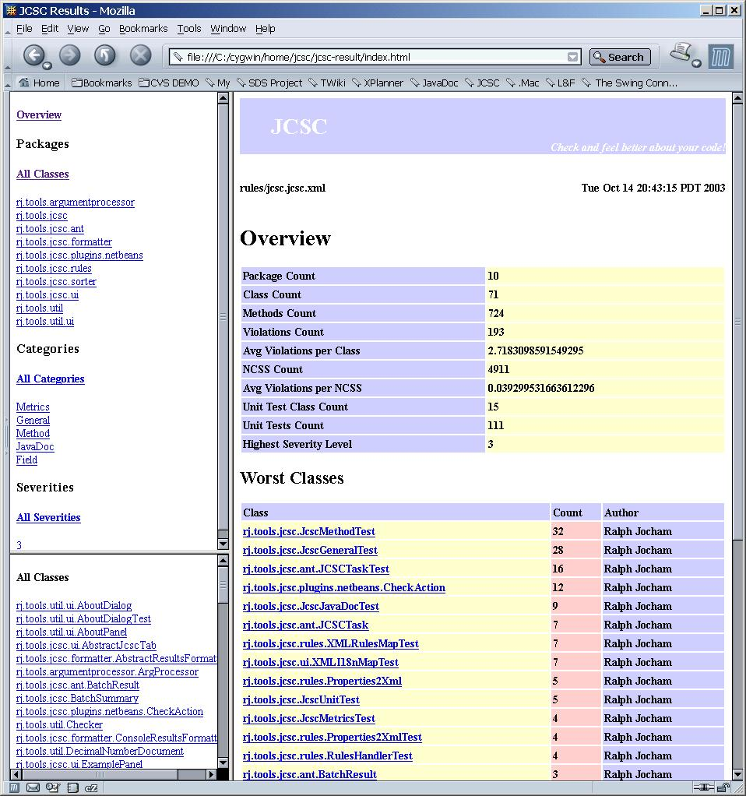

|
 JCSC JCSC
Documentation
Extensions
How
to get
General
Remote Tools
|
|
Extensions
Rules Editor UI
The graphical Rules Editor assists in creating the appropriate rules.
The rules are grouped into three groups on different tabs.
- General
- Field
- Method
- JavaDoc
- Metrics
- JUnit
Each rule in the set of rules is explained in Java showing a real life
example.

Also, a Regexp compiler which assists in generating regular expression.

Ant
Ant is the state of
the art make tool. In order to support Ant and to benefit from it, JCSC
does provide an Ant task. (see the
description here)
The Ant task provides two different ways of using it. Requires Ant
1.5.
- To parse one file, i.e. to be used a plugin into IDE
supporting Ant
- To parse a whole package tree of classes, i.e. to
check a whole project during a build (see CruiseControl). The output is
similar to a that of JavaDoc and be viewed with a XSLT complient
browser
(tested with IE6+ with SP1 and Mozilla1+).
Speed: On a P4/1.6 GHz, 1,000 classes are parsed in ~30
secs.


IntelliJ IDEA
IntelliJ IDEA is
a very powerful commercial IDE. For installation go to this link. This plugin is still in
development (any kind of feedback is appreciated) but stable.

CruiseControl
CruiseControl
is an open source Continious Integraction tool. JCSC can easily be
integrated into CruiseControl which means, that after each check in,
your codebase will be parsed and the results will appear on the
CruiseControl web page.
How to setup:
- add the JCSC entry to the cruisecontrol web page; see the JCSC_HOME/html/xml/xsl/CC2/buildresults.jsp.example
- in the webapps/cruisecontrol
folder create a logs/jcsc
folder
- copy the JCSC_HOME/html/xml/xsl
folder into the logs/jcsc
folder
- copy the files generated by the JCSC run into the webapps/cruisecontrol/logs/jcsc
folder
- merge the JCSC overview.xml
generated by the JCSC Ant task into the log.xml file in the
cruisecontrol config.xml
<log
dir="<drive_path>/cruisecontrol-2-0-2/logs"
encoding="ISO-8859-1">
<merge
file="<drive_path>/cruisecontrol-2-0-2/logs/jcsc/overview.xml"
/>
</log>
- update the cruisecontrol.bat
(or cruisecontrol.sh) to
include the JCSC.jar.
For some strange reasons about XML processing, you have to add the JCSC.jar file
before the cruisesontol.jar
file. Below is a
example for the .bat
version.
set
CRUISE_PATH=%CRUISE_PATH%;%JCSC_HOME%\lib\JCSC.jar;%DISTDIR%\cruisecontrol.jar;
...
- if you have problems contact me

Last updated on
2005-07-01 19:32
|


{kind=link}
{kind=link}